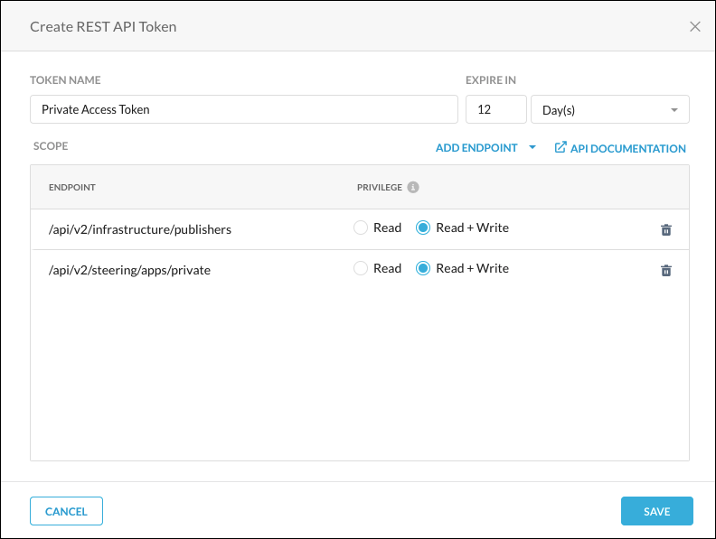
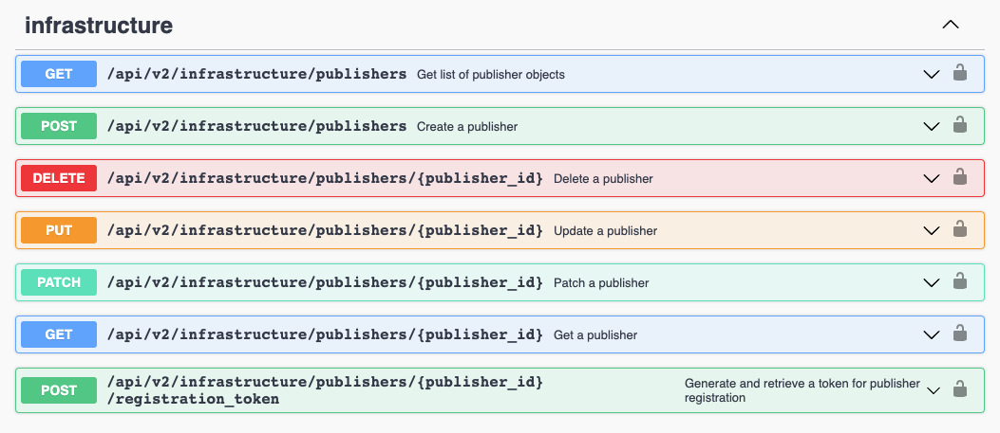
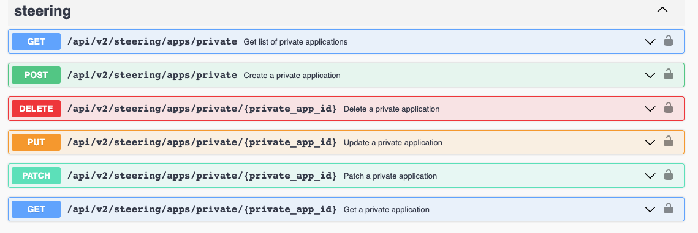

Private Access REST APIs
This topic explains how to use the new REST API v2 pages in the Netskope UI for Private Access Publishers and Private Apps. This functionality is currently available as Beta.
Netskope REST APIs use an auth token to make authorized calls to the API. Netskope REST APIs provide access to resources via URI paths. The token must be used in every REST API call for the tenant. The token can be created for use with specified APIs in the Netskope UI by going to Settings > Tools > Rest API v2.
At the top of the page there are three items:
 |
REST API Status: Shows the status and allows you to enable or disable all of the REST API tokens for this tenant. Click the pencil icon to open this dialog when you want to enable or disable all tokens.

Global Rate Limit: Shows the requests per second. Private Access supports up to four requests per second.
Reference: This link opens the Swagger API documentation. For use information, go to the Swagger API Documentation section below.
Create a New Token
On the REST API v2 page, click New Token.

Enter a token name, the token expiration time, and then click Add Endpoint to select the API endpoints to use with the token. The
infrastructureendpoints are used for the Publisher APIs. Thesteeringendpoints are used for the Private Apps APIs.Specify the privileges for each of the endpoints added. Read privileges include GET, and Read+Write privileges include GET, PUT, POST, PATCH, and DELETE.
 When finished, click Save.
A confirmation box opens showing whether the token creation was a success. If so, click Copy Token to save it for later use in your API requests. Add the token to the Netskope-Api-Token header.
Important
The only opportunity to copy the token is immediately after you create it. The token is required in your API requests.

When finished, click OK.
After being created, tokens can be managed by clicking the adjacent  icon for the token and selecting one of these options:
icon for the token and selecting one of these options:
 |
For example, to reset the token expiration time, Change Expiration. Specify the number of hours, days, weeks, or months to keep the token valid, and then click Save.
 |
For a standard token rotation over a given time period (like changing passwords every 90 days, for example), or in the event of a compromise/leak, you’ll want to revoke and reissue a new token.
Swagger API Documentation
To see API parameters information, click the API Documentation link on the REST API v2 page or in the Create REST API Token dialog box, which opens the Swagger UI. Available endpoints, methods, and parameters are displayed.
To view endpoint payload information in Swagger:
Click on one of the endpoints, like
infrastructure, to see the parameters available. Theinfrastructureendpoints are used for the Publisher APIs. The
steeringendpoints are used for the Private Apps APIs. Parameter descriptions provide information about the available values, format requirements, and factors related to use with other parameters. Some parameters provide dropdown lists for supported options, other parameters use text field entries.
Copy the endpoint Request URL and parameters to use in your API calls. Make sure the token is added to the Netskope-Api-Token header before sending requests; otherwise, you will get an error.
Publisher APIs
Create a Publisher: Go to
https://<tenant-name>.goskope.com/apidocs/#/infrastructure/post_api_v2_infrastructure_publishersGet a Publisher: Go to
https://<tenant-name>. goskope.com/apidocs/#/infrastructure/get_api_v2_infrastructure_publishers__publisher_id_Get a list of Publishers: Go to
https://<tenant-name>.goskope.com/apidocs/#/infrastructure/get_api_v2_infrastructure_publishersUpdate a Publisher: Go to
https://<tenant-name>.goskope.com/apidocs/#/infrastructure/put_api_v2_infrastructure_publishers__publisher_id_Patch a Publisher: Go to
https://<tenant-name>.goskope.com/apidocs/#/infrastructure/patch_api_v2_infrastructure_publishers__publisher_id_Delete a Publisher: Go to
https://<tenant-name>.goskope.com/apidocs/#/infrastructure/delete_api_v2_infrastructure_publishers__publisher_id_
Private Apps APIs
Create a Private App: Go to
https://<tenant-name>.goskope.com/apidocs/#/steering/post_api_v2_steering_apps_privateGet a Private App: Go to
https://<tenant-name>.goskope.com/apidocs/#/steering/get_api_v2_steering_apps_private__private_app_id_Get a list of Private Apps: Go to
https://<tenant-name>.goskope.com/apidocs/#/steering/get_api_v2_steering_apps_privateUpdate a Private App: Go to
https://<tenant-name>.goskope.com/apidocs/#/steering/put_api_v2_steering_apps_private__private_app_id_Patch a Private App: Go to
https://<tenant-name>.goskope.com/apidocs/#/steering/patch_api_v2_steering_apps_private__private_app_id_Delete a Private App: Go to
https://<tenant-name>.goskope.com/apidocs/#/steering/delete_api_v2_steering_apps_private__private_app_id_
API Parameters
Key | Type | Example | Description |
|---|---|---|---|
| string |
| Required. Obtain the REST API token from the Netskope UI. To learn how to generate a token, see Create a New Token. We recommend that you place the token in the request header, not in the endpoint URL. |
| string |
| Required. Name of the private app(s). |
| string |
| Required. Enter a FQDN, wild card domain, IP subnet, or IP address. |
| array |
| Required. The name and/or ID of the Publisher that provides access to this application. |
| string |
| Required. The ID of the Private App being accessed. |
| array |
| Required. Defines the protocol type and port(s). Type values are |
| boolean |
| Optional. Protocol used by the private app. Values are |
| boolean |
| Optional. Enables Browser Access for Private Apps. Values are |
| boolean |
| Optional. Enables the Publisher DNS option. Values are |
| boolean |
| Optional. Enable if Trusted self-signed certificates should be used for Browser Access. Values are |
| string | " | Optional. Returns the specified fields in the JSON object for the Get method |
| boolean |
| Optional. Shows status code but skips data code. Values are |